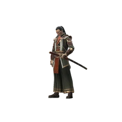
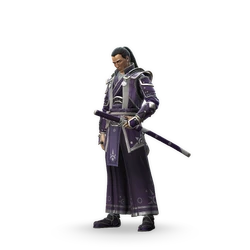
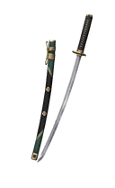
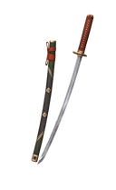

Иту

Редкость: Legendary
Пол: Male
Фракция: Heralds
Энергия: Shadow
Класс: Hard
Добыча: Rift Keys and Chests
| Название | Редкость | Изображение |
|---|---|---|
| Иту, сон бездны | Легендарный |  |
| Канцлер | Обычный |  |
| Тёмный кукловод | Эпический |  |
| Великий канцлер | Сезонный |  |
| Искатель истин | Редкий |  |
| Звездочёт | Редкий |  |
| Уничтожителб эпох | Эпический |  |
| Название | Редкость | Изображение |
|---|---|---|
| Лезвие измерений | Эпический |  |
| Клинок безвременья | Обычный |  |
| Время правды | Обычный |  |
| Холодный космос | Обычный |  |
| Элитный клинок | Обычный |  |
| Ключ к бесконечности | Эпический |  |
| Манипулятор | Обычный |  |
| Жнец познания | Редкий |  |
| Синкэн | Обычный |  |
| Клинок тысячи страниц | Редкий |  |
| Рассекатель вселенных | Редкий |  |
| Название | Описание | Изображение |
|---|---|---|
| Ядомэдзюцу | Приседая Иту способен отразить дальнюю атку противника. Если атаку отразить невозможно, Иту от неё увернётся. |
|
| Теневая синхронизация | В начале раунда Иту мгновенно получет часть теневой энергии |  |
| Парадокс | Иту не получает урон при Манипуляции Временем | |
| Передовой | Если Пространственно-временной разрез не удается, Иту оставляет энергетический импульс, который наносит урон противнику при ударе. |
 |
| Квинтэссенция | Успешные атаки Иту во время манипуляции временем имеют решающее значение. |
|
| Метафизический расчет | Иту восстанавливает часть здоровья, концентрируясь перед Пространственно-временным разрезом. |  |
| Посол Бесконечности | Заряд Манипуляции Временем накапливается быстрее, если уровень здоровья Иту низкий. |  |
| Стремление к совершенству | Каждая успешная атака Иту увеличивает его урон. Успешная атака противника сбрасывает этот эффект. |  |
| Забудь прошлое | Для активации Spacetime Slash не требуется полная полоска теневой энергии. |  |
| Узрите будущее | Достигнув максимальной концентрации перед Пространственно-временным разрезом, Иту проводит атаку, от которой невозможно уклониться. |  |
| Судьба обмана | У способности Itu's Time Manipulation сокращенное время восстановления. У героев вашей команды сокращенное время восстановления дальних атак. |  |
| Судьба Жажды | Успешные атаки дают дополнительную теневую энергию героям вашей команды. |  |